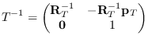
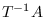

The direction of the vertex loop or the edge loop
is defined so that the vertices or edges are arranged
in the counter-clockwise order when the body is observed from outside.
Pvertex and nvertex, and pface and nface
are determined so that an edge is
oriented from pvertex toward nvertex
when pface is located at the left
of the edge observing them from outside.
line [class]
:super propertied-object
:slots ((pvert :type float-vector)(nvert :type float-vector))
-
- defines a line passing on pvert and nvert.
The line is directed from pvert to nvert in the parametric
representation:
.
:vertices [method]
-
- returns the list of pvert and nvert.
:point p [method]
-
-
returns a three dimensional float-vector that corresponds to the
p parameter on this line.

:parameter point [method]
-
-
Computes the parameter for point on this line.
This is the inverse method of :point.
:direction [method]
-
-
returns a normalized vector from pvert to nvert.
:end-point v [method]
-
-
returns the other end-point of this line, i.e.
if v is eq to pvert, nvert is returned,
if v is eq to nvert, pvert is returned,
otherwise NIL.
:box [method]
-
- creates and returns a bounding-box of this line.
:boxtest box [method]
-
-
checks intersection between box and the bounding-box of this line.
:length [method]
-
- returns the length of this line.
:distance point-or-line [method]
-
-
returns the distance between the point-or-line and this line.
If the foot of the vertical line from the point
to this line does not lie between pvertex and nvertex,
the distance to the closest end-point is returned.
Using this method to calculate the distance between two lines,
interference between two cylinders can be tested.
:foot point [method]
-
-
finds the parameter for the point which is the foot of the vertical
line from point to this line.
:common-perpendicular l [method]
-
-
finds the line which is vertical both to this line and to l
and returns a list of two 3D float-vectors.
:project plane [method]
-
-
returns a list of two points that are the projection of pvert of nvert
onto plane.
When two lines are in parallel and a common perpendicular line cannot
be determined uniquely, parallel is returned.
:collinear-point point &optional (tolerance *coplanar-threshold*) [method]
-
-
checks whether point is collinear to this line with the tolerance of
tolerance using collinear-p.
If point is collinear to this line,
the parameter for the point on the line is returned, otherwise NIL.
:on-line-point point &optional (tolerance *coplanar-threshold*) [method]
-
-
checks whether the point is collinear to this line,
and the point lies on the part of the line
between pvert and nvert.
:collinear-line ln &optional (tolerance *coplanar-threshold*) [method]
-
-
checks if ln is collinear to this line, i.e. if the two end-points
of ln lie on this line.
T or NIL is returned.
:coplanar ln &optional (tolerance *coplanar-threshold*) [method]
-
-
checks if this line and ln are coplanar.
Two end-points of this line and one end-point of ln defines a plane.
If another end-point of ln is on the plane, T is returned,
otherwise NIL.
:intersection ln [method]
-
-
ln is a line coplanar with this line.
:Intersection returns a list of two parameters for the intersection
point of these two lines.
A parameter may be any float number, but a parameter between 0 and 1
means an actual intersection on the line segmented by two end-points.
NIL if they are in parallel.
:intersect-line ln [method]
-
-
ln is a line coplanar with this line.
Two parameters of the intersecting point
is returned along with symbolic information such as
:parallel, :collinear, and :intersect.
edge [class]
:super line
:slots (pface nface
(angle :type float)
(flags :type integer))
-
- represents an edge defined as the intersection between two faces.
Though pface and nface are statically defined in the slots,
their interpretations are relative to the direction of this edge.
For example, pface represents the correct pface when this edge
is considered to goes from pvert toward nvert.
So, pvert and nvert in your interpretation must be given to the :pface
and :nface methods to select the appropriate face.
make-line point1 point2 [function]
-
-
creates an instance of line whose pvert is point1 and
nvert is point2.
:pvertex pf [method]
-
-
returns pvertex when face is regarded as the pface of this edge.
:nvertex face [method]
-
-
returns nvertex regarding face as the pface of this edge.
:body [method]
-
- returns the body object that defines this edge.
:pface pv nv [method]
-
- returns pface when the pv and nv
are interpreted as the virtual pface and nface of this edge, respectively.
:nface pv nv [method]
-
- returns nface when the pv and nv
are interpreted as the virtual pface and nface of this edge, respectively.
:binormal aface [method]
-
-
finds the direction vector which is perpendicular both to this line and to
the normal of aface.
:angle [method]
-
-
returns the angle between two faces connected with this edge.
:set-angle [method]
-
-
computes the angle between two faces connected with this edge and
stores it in the angle slot.
:invert [method]
-
-
:set-face pv nv f [method]
-
-
sets the f face as a pface regarding pv as the pvertex
and nv as the nvertex.
Note that this may change either pface or nface of this edge.
:contourp viewpoint [method]
-
-
T if this is a contour edge, i.e., either pface or nface of this edge is
visible and the other is invisible from viewpoint.
:approximated-p [method]
-
-
T if this edge is an approximated edge representing curved surface
like the side of a cylinder.
Approximated edges are needed to represent curves by segmented straight
lines.
:set-approximated-flag &optional (threshold 0.7) [method]
-
-
In EusLisp, every curved surface is approximated with many planar faces.
The LSB of flags is used to indicate that the faces on the both
sides of this edge are curved faces.
:set-approximated-flag sets this flag to T, if the angle between
two faces is greater than threshold.
:init &key :pface :nface :pvertex :nvertex [method]
-
-
2016-03-23